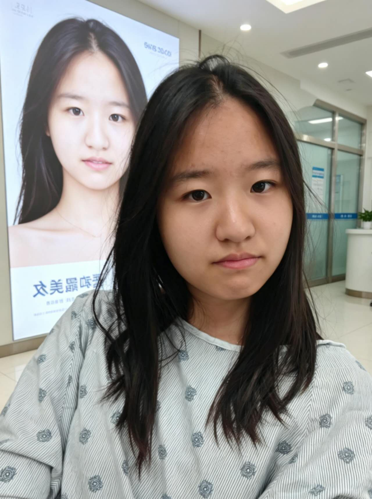
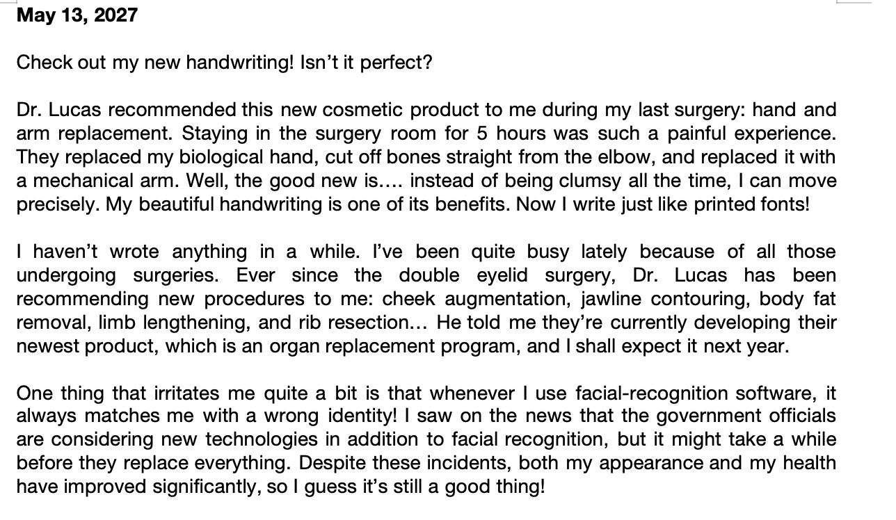
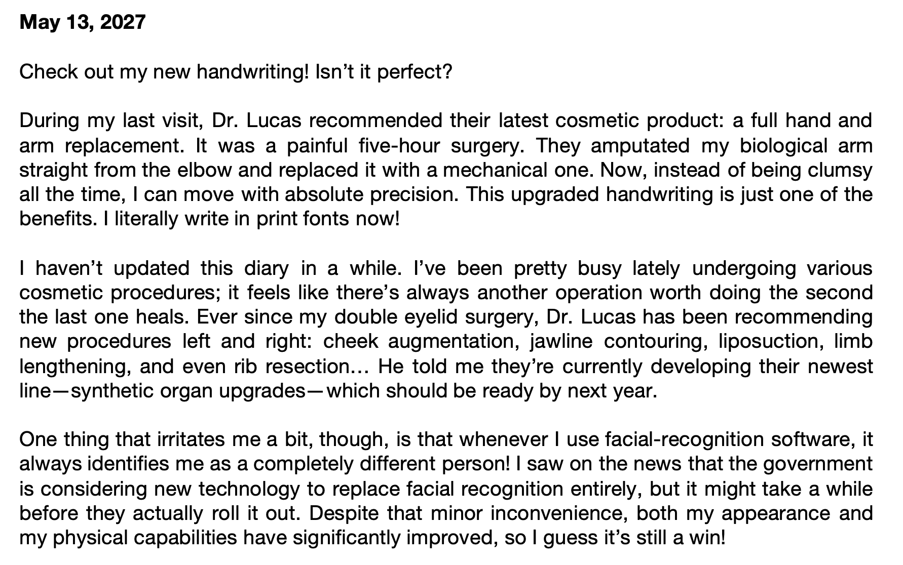

Analyzing Technology & My Learning
I've been exploring how to incorporate AI to make my rhetorical choices more effective, and I have to say, these are incredible tools that have helped me overcome my technical constraints and develop things I could never have done by myself. As I started to build my imitation project, I found AI could be most helpful in three ways: writing code for my project website, generating images, and transforming my original text into an "AI-style" summary.
AI for Coding: Building the X Page Website

Image 1: An example of how I interact with Claude: I'll describe what I want to create, provide a detailed example of outcome, ask Claude to make a plan for itself, and monitor how it's being executed.
As I mentioned in my imitation project craft essay, I created a website using Claude that looks like an X page. It actually expanded my choices of media type, as I no longer need to worry about the limited layout I could create within Google Sites and focus more on delivering my rhetorical choices effectively.
This image is a good represents on how I communicate with Claude. I would start with describing what I want to create/fix, followed by a detailed example of the outcome, and tell Claude to make a plan before actually writing the code. By doing so, AI not only understands what I'm doing but also the reason behind it. It sounds like a small thing, but similar to how humans interpret a task, telling AI why you're doing it could significantly improve its output.
Of course, AI also makes mistakes, and some of those mistakes could happen repetitively. What I did to solve this issue was to create a "learning-log" for my AI under the same folder. After my AI successfully fixed the mistake, I would create another prompt like, "Can you log your mistake & revision into the file so you won't make it again in the future?" I figured out that as AI knows about its common mistakes and gradually discovers my personal preferences, it will generate more qualified content that satisfies my needs.
AI for Image Generation: Showing Transformation Without Using Someone Else's Face

Image 2 (left): My original selfie, the source image I fed to the AI.
Image 3 (middle): AI-generated - the girl waiting in a hospital room with a "Big Brother" advertisement of her idealized self.
Image 4 (right): AI-generated - an extreme version of beauty standards that makes the girl look like a fake human.
In addition to coding, I also let it generate images based on the story context. For example, I used a lot of contrast in the "diary" part of my imitation project to demonstrate how the girl changed her appearance before and after her surgeries.
Since I don't want to use someone else's face to generate a fake image, I decided to feed AI an image of myself. The first image is an original selfie of me. The second image was generated by AI after I prompted, "Generate an image of this girl waiting in a hospital room. There is a giant advertisement featuring a 'Big Brother' version of herself in the background, but instead it represents a beautiful image of herself after receiving cosmetic surgery". And the third image was another AI-generated piece, after I told it to depict an "extreme version of beauty standards that makes the girl look like a fake human".
AI is especially helpful in delivering my rhetorical choices effectively because it only retouches certain key aspects of the image - appearance, color, and style - while other elements still remain the same. When I make a contrast between the two images, readers will immediately recognize what has changed and what remains the same, which highlights my argument about dehumanization effectively.
AI for Specific Writing Style: Making the Argument Through Voice
Finally, I intentionally prompted Gemini to rewrite some of my original diary entries with an "AI-style" writing, which demonstrates how cosmetic surgery has transformed the girl to think like a robot. The first image is my original entry written in a personal tone, and the second image is its AI-generated version. Notice that certain phrases, such as "move with absolute precision" and "synthetic organ upgrades", just sound too "academic" and unnatural for a diary. Again, feeling awkward when reading those sentences is the exact feeling I wanted to bring to my audiences.

Image 5 (top): My original diary entry written in a personal, human tone.

Image 6 (bottom): The AI-generated version of a diary.